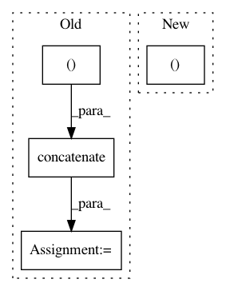

fa7ee697076d2061faeaf7ebf20cdcd5da352eae,tests/application_driver_test.py,ApplicationDriverTest,test_multi_device_multi_optimiser_gradients,#ApplicationDriverTest#,193
Before Change
self.assertGreater(np.sum(np.abs(g_1 - g_2)), 0.0, msg)
self.assertGreater(np.sum(np.abs(g_1 - g_3)), 0.0, msg)
self.assertGreater(np.sum(np.abs(g_2 - g_3)), 0.0, msg)
g_array = np.concatenate([g_0.reshape((1, -1)),
g_1.reshape((1, -1)),
g_2.reshape((1, -1)),
g_3.reshape((1, -1))], axis=0)
g_ave = g_ave.reshape(-1)
g_np_ave = np.mean(g_array, axis=0)
self.assertAllClose(g_np_ave, g_ave)
SESS_FINISHED.send(test_driver.app, itermsg=None)
test_driver.app.stop()
After Change
for i in range(2):
sess.run(test_driver.app.gradient_op)
// query sample generator gradient to check
dis_0, dis_1, dis_2, dis_3, dis_ave = sess.run([
tf.get_default_graph().get_tensor_by_name(
"worker_0/ComputeGradients/gradients/AddN_5:0"),
tf.get_default_graph().get_tensor_by_name(
In pattern: SUPERPATTERN
Frequency: 3
Non-data size: 4
Instances
Project Name: NifTK/NiftyNet
Commit Name: fa7ee697076d2061faeaf7ebf20cdcd5da352eae
Time: 2018-10-30
Author: elias.tappeiner@umit.at
File Name: tests/application_driver_test.py
Class Name: ApplicationDriverTest
Method Name: test_multi_device_multi_optimiser_gradients
Project Name: NifTK/NiftyNet
Commit Name: 5af1994def9a52fe1ffd2847b2519f1e27cfbc64
Time: 2017-08-12
Author: wenqi.li@ucl.ac.uk
File Name: niftynet/io/misc_io.py
Class Name:
Method Name: do_resampling
Project Name: catalyst-team/catalyst
Commit Name: 709de0106c5cb631d382523bbe51667cb80522cb
Time: 2019-05-07
Author: tez.romach@gmail.com
File Name: catalyst/contrib/scheduler/onecycle.py
Class Name: OneCycleLR
Method Name: __init__